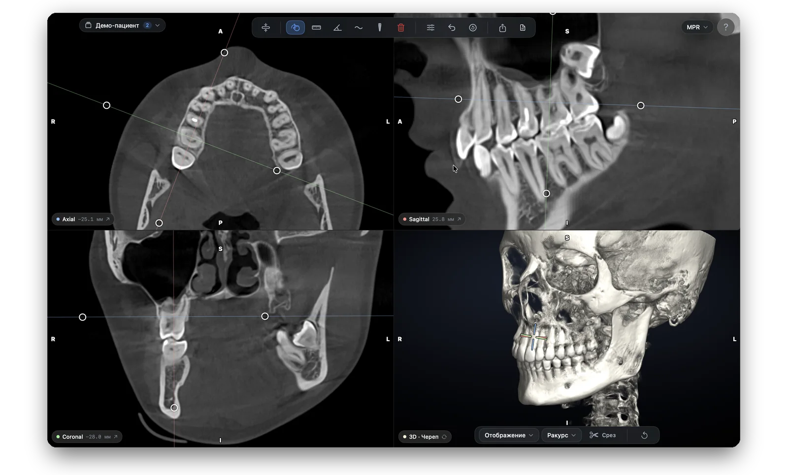
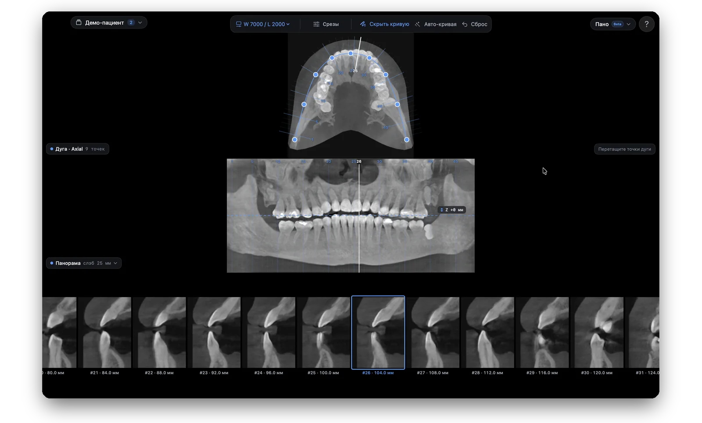
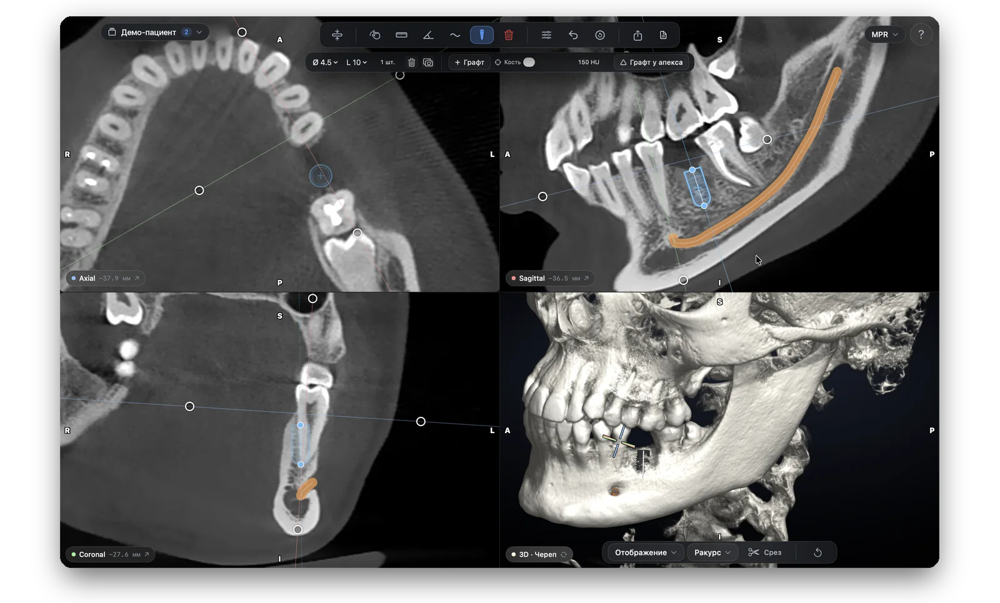
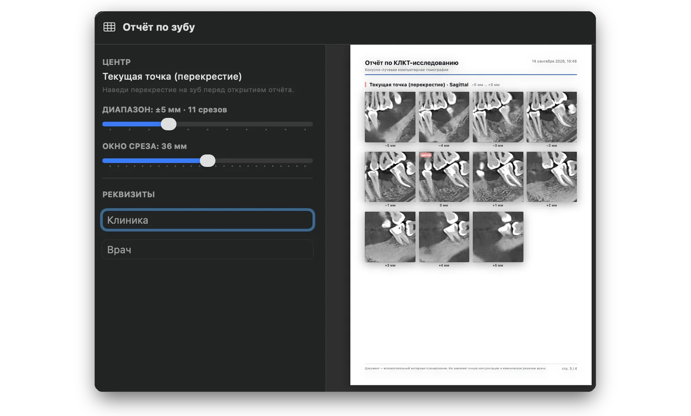

КЛКТ исследования на Mac - это Vidi!
Просмотр, измерения, разметка нерва и планирование имплантации. Открывает архивы Sidexis, Sirona, Galileos и любой DICOM.
macOS 14.0+, Apple Silicon. 599 ₽ / месяц

Три шага до первого снимка
От установки до открытого исследования — пара минут.
Скачайте
DICOM Viewer для Mac — демо бесплатно. Установка обычным перетаскиванием в «Программы».
Оформите подписку
Платные функции открываются по подписке через Telegram-бот.
Откройте снимок
Перетащите папку, ZIP, RAR или .dcm — исследование откроется само, вложенные архивы распакуются.
Всё для работы с КЛКТ — в одном окне
От классического MPR до планирования имплантации с контролем безопасного расстояния до нерва.
Три проекции и объёмный 3D
Листай срезы в аксиальной, сагиттальной и корональной проекциях одновременно (MPR) — перекрестие связывает все окна. Четвертое окно — 3D рендер черепа c различными масками.
- Синхронное перекрестие во всех окнах MPR
- Косые срезы и slab (MIP / MinIP / усреднение) регулируемой толщины
- HU-зонд под курсором и анатомические метки R/L/A/P/S/I
Панорама прямо из КЛКТ
Получи панорамный снимок (ОПТГ-подобный) вдоль зубной дуги — гладкая кривая, толщина среза настраивается. Утолщай срез, чтобы увидеть весь канал или корень целиком.
- Реконструкция по кривой вдоль зубной дуги
- Экспорт панорамы и скриншотов в PNG

Разметка нерва и безопасный имплант
Отметьте нижнечелюстной канал в пару кликов — авто-трассировка сама проведёт линию. Поставьте имплант из библиотеки размеров и сразу увидите расстояние до стенки канала по цветовой шкале.
- Авто-трассировка канала + ручная коррекция
- Библиотека имплантов Ø3.5–4.5 × 8–14 мм с реалистичной 3D-моделью
- Индикатор безопасности: зелёный ≥2 мм / жёлтый 1–2 мм / красный <1 мм

Отчёты в PDF — в один клик
Сформируйте отчёт для пациента или коллеги: полный — с данными пациента, тремя проекциями, панорамой и таблицами измерений.
- Полный отчёт по исследованию
- Таблицы измерений, имплантов и разметки нерва

Открывает что угодно!
Перетащите архив в приложение — откроется само. Папка с DICOM, ZIP, RAR или отдельный файл; вложенные архивы распаковываются автоматически.
- Вкладки исследований и локальная библиотека между запусками
- Локально и приватно: данные пациента не уходят в облако
Поддержка всех известных форматов
Полная поддержка всех известных форматов КЛКТ от различных производителей КЛКТ аппаратов.
Не поддержанные форматы открываются с понятной подсказкой — попросите в клинике несжатый DICOM.
Что нужно для запуска
macOS 14.0 или новее
Современная версия системы — для нативной графики и стабильной работы.
Apple Silicon (M1 и новее)
Только чипы M-серии. Версии под Intel-Mac и Windows нет.
16 ГБ ОЗУ — рекомендуется
Для крупных объёмов и нескольких открытых исследований одновременно.
Лёгкая альтернатива тяжёлому софту
Снимки приходят в архивах от разных клиник — а смотреть их хочется быстро и на Mac. Для этого есть Vidi.
- Тяжёлый, часто привязан к Windows
- Завязан на конкретный аппарат и клинику
- Сложная установка и настройка
- Лёгкое нативное приложение для macOS
- Открывает экспорты любых клиник и стандартный DICOM
- Без поиска корневой папки с DICOM файлами
DICOM Viewer для Mac
Вход в приложение осуществляется после создания аккаунта и оплаты подписки в Telegram-боте.
Что говорят врачи
Реальные отзывы о приложении.
«Давно искал замену неудобным приложениям для просмотра КЛКТ снимков, Види, решило этот вопрос»
«Благодаря Vidi, я могу комфортно заниматься составлением планов лечения за своим личным компьтером, я не привязан к клинике»
«Наконец-то просмотр КТ на мак стал удобным»
«Хорошее приложение, в лучшую сторону отличается от других приложений просмотра кт на Mac»
«Смотрю КТ дома, удобно»